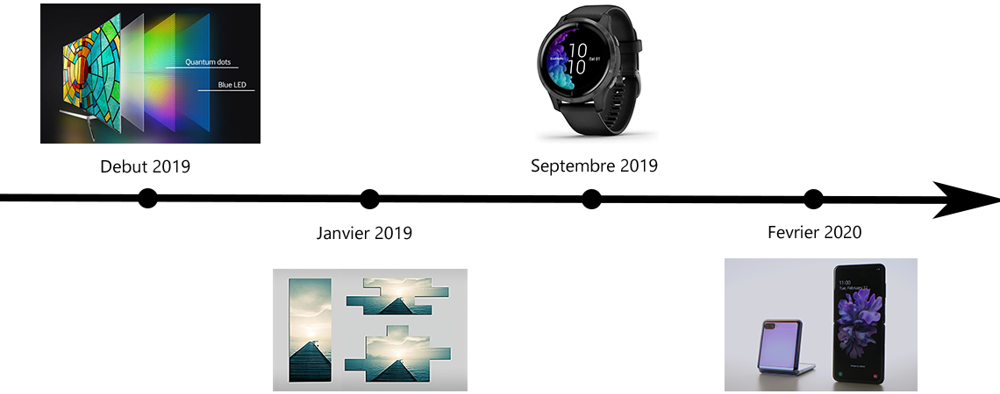

La Veille Technologique : de quoi s'agit-il ?
La veille technologique est une pratique qui consiste à surveiller en permanence un produit, une technologie, un procédé, dans le but de suivre son évolution en collectant des données publiques -à l'inverse de l'espionnage industriel- et de les analyser afin de rester à la pointe de la technologie, anticiper la concurrence, identifier les meilleures pratiques et les appliquer.
La Veille Technologique est ainsi essentielle pour une entreprise.
Le sujet de veille abordé ici sera : la technologie des écrans
Note : Vous pouvez passer le curseur sur une image pour réveler la description associée.
